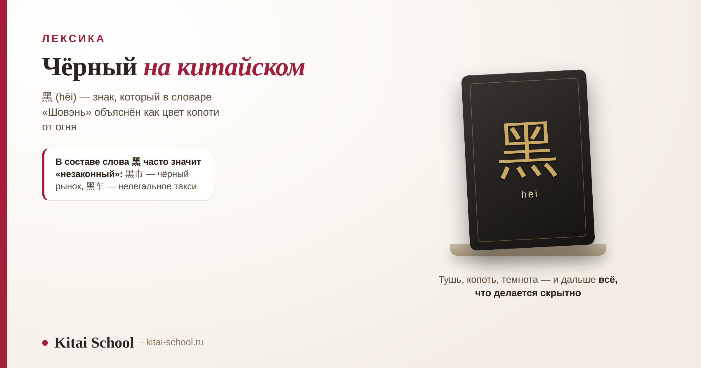
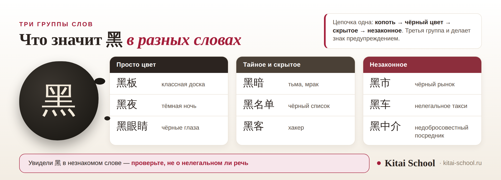

Лексика
Чёрный на китайском: иероглиф 黑, слова от 黑板 до 黑马 и значение «незаконный», которого нет в русском


Чёрный по-китайски — 黑 (hēi), и выучить это слово несложно. Интереснее другое: у знака 黑 длинная цепочка значений, и в конце её стоит «незаконный». 黑市 — чёрный рынок, 黑车 — нелегальное такси, 黑中介 — недобросовестный посредник. Разберём, как устроен сам иероглиф, какие слова с ним бывают и почему эту группу стоит узнавать в первую очередь.
Чёрный — 黑 (hēi), в речи 黑色. Знак объясняют через копоть: дымоход сверху, пламя внизу. Цепочка значений: копоть, чёрный цвет, скрытое, незаконное. 黑车 и 黑中介 — предупреждения, а не просто слова. 黑客 — хакер, записанный по звучанию. 背黑锅 — отдуваться за чужую вину. Символика цветов разобрана у нас отдельно.
Короткий ответ: как будет чёрный на китайском
黑 (hēi), первый тон — ровный и высокий. В речи, как и с другими цветами, чаще звучит форма с 色: 黑色 (hēisè), «чёрный цвет». Схема общая для всех цветов, и подробно она разобрана в статье про цвета на китайском с транскрипцией.
Слово работает и буквально, и в переносном смысле. Буквально — это цвет: 黑头发 чёрные волосы, 黑衣服 чёрная одежда. Переносно — всё тёмное, скрытое и дурное, и об этом будет большая часть статьи.
Ещё одно значение, промежуточное между этими двумя, — «тёмный» в смысле освещённости: 天黑了 (tiān hēi le) значит «стемнело», и к цвету предмета это уже не относится. Фраза бытовая, её слышишь каждый вечер.
Отдельно сразу скажу, чего здесь не будет. Символику чёрного — связь со стихией воды, севером и трауром — мы разбирали в отдельной статье, и пересказывать её я не стану: значение цветов в Китае. Эта статья про слово и про слова с ним.
Как устроен иероглиф 黑
Знак непростой на вид, но логика в нём есть, и она объясняет всю дальнейшую лексику.
| Что | Значение |
|---|---|
| Чтение | hēi, первый тон |
| Значение | чёрный; тёмный; скрытый; дурной |
| Черт | двенадцать |
| Устройство | сверху часть, которую описывают как дымоход, внизу 炎 — пламя |
| В системе ключей | ключ № 203 по словарю «Канси» |
| В речи | обычно 黑色 (hēisè) — «чёрный цвет» |
Что внутри. Нижняя часть знака — 炎 (yán), два огня друг над другом, то есть сильное пламя. Верхнюю часть описывают как дымоход или отверстие, через которое выходит дым. Словарь «Шовэнь» объясняет 黑 прямо: это цвет, который даёт копоть от огня.
Оговорюсь честно: реконструкции древних форм знака расходятся в деталях. Разные исследователи видят в верхней части разные предметы, и единой картины нет. Но направление у всех объяснений одно: от огня и копоти к названию цвета.
Для практики важнее другое. 黑 — не только знак, но и ключ: по системе словаря «Канси» это ключ номер двести три. О том, как ключ подсказывает смысл незнакомого знака, у нас есть отдельный материал — значение ключей в китайских иероглифах.
Знаков с этим ключом немного, но два из них стоит знать. 墨 (mò) — тушь: сверху 黑, снизу 土 «земля», и значение прозрачно, ведь тушь делали из сажи. Отсюда 墨水 (mòshuǐ) чернила и 水墨画 (shuǐmòhuà) живопись тушью. Второй знак — 默 (mò), «молчать»: 沉默 (chénmò) молчание, 默默 (mòmò) молча, без слов.
Зато слов, которые начинаются с 黑, очень много, и значение в них объясняется той самой цепочкой от копоти к темноте. Цепочка эта короткая и понятная: копоть даёт название цвету, цвет переносится на темноту, темнота — на всё, что делается скрытно, а скрытное легко оказывается незаконным. Каждый шаг здесь объясним, и именно поэтому группы слов не нужно зубрить по отдельности. Разберём их по порядку: сначала безобидные, потом те, что служат предупреждением.
Слова, где чёрный — это просто цвет
Начнём с безобидной части. Здесь 黑 означает ровно то, что написано, и никаких вторых смыслов искать не нужно.

| Слово | Пиньинь | Значение | Пояснение |
|---|---|---|---|
| 黑板 | hēibǎn | классная доска | дословно «чёрная доска» |
| 黑夜 | hēiyè | тёмная ночь | в отличие от нейтрального 夜晚 |
| 黑眼睛 | hēi yǎnjing | чёрные глаза | обычное описание внешности |
| 黑白 | hēibái | чёрно-белый | о фотографии, кино, печати |
| 黑色 | hēisè | чёрный цвет | базовая форма для описания предметов |
Самое употребительное в этом списке — 黑板. Классную доску называют чёрной независимо от того, какого она цвета на самом деле: слово закрепилось и стало названием предмета. Рядом есть 黑板报 (hēibǎnbào) — стенгазета, которую в китайских школах рисуют мелом прямо на доске.
Пара 黑夜 и 夜晚 (yèwǎn) показывает оттенок: второе — нейтральное «ночь, вечернее время», первое подчёркивает темноту. Поэтому 黑夜 чаще встречается в книжной речи и в описаниях, а в разговоре о времени берут 晚上.
Когда 黑 значит «незаконный»
А вот группа, ради которой стоило всё затевать. В этих словах 黑 к цвету отношения не имеет: оно означает, что дело делается в обход правил.
| Слово | Пиньинь | Значение | О чём речь |
|---|---|---|---|
| 黑市 | hēishì | чёрный рынок | торговля вне закона, в том числе валютная |
| 黑车 | hēichē | нелегальное такси | машина без лицензии; цену назначают на месте |
| 黑中介 | hēi zhōngjiè | недобросовестный посредник | чаще всего о жилье и трудоустройстве |
| 黑名单 | hēi míngdān | чёрный список | и в быту, и в документах |
| 黑工 | hēigōng | нелегальная работа | о работе без разрешения |
Ученица прилетела в Китай вечером и у вокзала села в машину, которую предложил человек с табличкой. Довёз он нормально и вёл себя вежливо, но взял заметно больше обычного.
На занятии она рассказала об этом скорее как о забавном случае. Мы разобрали слово, которое ей тогда не встретилось: 黑车 — «чёрная машина», то есть такси без лицензии.
Самое обидное выяснилось потом. Предупреждение висело прямо у выхода из вокзала, крупными знаками. Прочитать его она не могла, а картинка там была такая же, как на всех остальных объявлениях.
Знак 黑 в составе слова часто работает предупреждением. Узнавать его стоит раньше, чем выучишь само слово: даже если вы не разберёте вторую часть, уже понятно, что речь о чём-то нелегальном.
Практический вывод из этой истории простой. Если в объявлении или в предупреждении вы видите знакомый знак 黑, это почти наверняка про нелегальное — и вторую часть слова можно посмотреть позже, а решение принять сразу.
Пара слов пригодится и в дороге, и при поиске жилья: 黑车 вам предложат у вокзала или аэропорта, 黑中介 встретится при аренде квартиры. Базовые дорожные фразы, с которыми проще отказаться и объясниться, собраны отдельно: китайский язык для путешествий.
Противоположность этой группе тоже есть, и её полезно знать: 正规 (zhèngguī) значит «официальный, по правилам». 正规出租车 — лицензированное такси, 正规中介 — агентство с документами. Если спрашиваете совета у местных, это слово в вопросе сразу показывает, что вы понимаете разницу.
Заодно стоит запомнить, как лицензированное такси выглядит в словах: у него есть счётчик — 计价器 (jìjiàqì), и чек — 发票 (fāpiào). Просьба 我要发票 (wǒ yào fāpiào), «мне нужен чек», в нелегальной машине попросту не сработает, и это ещё один способ понять, с чем вы имеете дело, не вступая в спор.
黑客, 黑马 и 背黑锅
Три слова, которые стоят особняком: два заимствования и одно выражение.
| Слово | Пиньинь | Значение | Как устроено |
|---|---|---|---|
| 黑客 | hēikè | хакер | запись по звучанию: «чёрный» плюс «гость» |
| 黑马 | hēimǎ | тёмная лошадка | о неожиданном победителе — как и по-русски |
| 背黑锅 | bēi hēiguō | отдуваться за чужую вину | дословно «нести чёрный котёл» |
| 黑心 | hēixīn | бессовестный | о человеке и о товаре: 黑心商家 — нечестный продавец |
| 抹黑 | mǒhēi | очернить, опорочить | дословно «замазать чёрным» |
黑客 — хороший пример китайского заимствования. Слово hacker записано по звучанию, но знаки подобраны не случайно: получилось «чёрный гость», и смысл в этом тоже читается. Так в китайском устроены многие заимствования: звук подбирают первым делом, но из подходящих по звучанию знаков берут те, что дают осмысленную картинку.
背黑锅 переводится как «отдуваться за чужую вину», дословно — «нести чёрный котёл». Происхождение выражения объясняют по-разному, и надёжной версии я не нашла, поэтому ограничусь значением. Употребляется оно часто, в том числе в разговоре о работе.
А про 黑马 скажу осторожно: в китайском оно значит ровно то же, что русская «тёмная лошадка» — неожиданный победитель. Откуда слово пришло в китайский, в проверяемом виде я не нашла, так что утверждать ничего не буду. Употребляется оно широко: о спортсменах, о претендентах на пост, о фильмах, которые внезапно собрали кассу, и о компаниях, которые стали заметными за несколько месяцев.
Сюда же стоит добавить 黑心 (hēixīn) — «чёрное сердце», то есть бессовестный. Чаще всего встречается в сочетании 黑心商家 — нечестный продавец, и в новостях о некачественных товарах. И 抹黑 (mǒhēi), дословно «замазать чёрным»: очернить, испортить репутацию — слово из газетного и политического языка, в бытовой речи оно звучит редко.
Пара 黑 и 白
Чёрный и белый в китайском, как и в русском, постоянно употребляются вместе — и в прямом смысле, и в переносном.
- 黑白 (hēibái) — чёрно-белый: о фотографии, кино, печати.
- 颠倒黑白 (diāndǎo hēibái) — «переворачивать чёрное и белое», то есть искажать правду, выдавать одно за другое.
- 白纸黑字 (bái zhǐ hēi zì) — «на белой бумаге чёрные знаки», наше «чёрным по белому»: о том, что записано и подтверждено.
- 黑白分明 (hēibái fēnmíng) — когда границы ясны и одно чётко отделено от другого.
Любопытно, что русские и китайские выражения здесь совпадают почти дословно. Это не заимствование, а простое совпадение образа: контраст чёрного и белого одинаково очевиден в любой культуре.
Есть и асимметрия, о которой стоит помнить. У белого в китайском своя группа переносных значений, и она не совпадает с русской: 白 может значить «напрасно» — 白跑一趟 (bái pǎo yí tàng) «сходить впустую», и «бесплатно» — 白吃 (bái chī) «поесть даром». Так что пара 黑 и 白 работает вместе только в устойчивых выражениях, а по отдельности знаки расходятся далеко.
Что из этого важно иностранцу
Свод короткий, и он про практику, а не про символику.
- Выучите группу «нелегального» раньше остальных. 黑车, 黑中介, 黑市, 黑工 — четыре слова, которые экономят деньги и нервы.
- Не бойтесь самого цвета. Чёрная одежда в Китае обычна, деловой костюм тёмный, и никакого подтекста в этом нет.
- Про подарки и оформление смотрите нашу статью о цветах: там разобрано, что уместно на празднике, а что нет: значение цветов в Китае.
- В словах 黑客 и 黑马 значение «незаконный» не работает: это заимствования, и ориентироваться нужно на слово целиком.
- Спрашивая дорогу или совет, пользуйтесь словом 正规 «официальный»: 正规出租车, 正规中介 — так вопрос звучит понятнее и короче любых объяснений.
И общий приём, который работает за пределами этой темы: если знак в слове даёт странный перевод, посмотрите, нет ли у него переносного значения. У 黑 их несколько, и они разведены по группам, которые легко запомнить.
Проверить себя можно так: возьмите незнакомое слово с 黑 и попробуйте угадать группу до того, как посмотрите перевод. Речь о предмете — скорее всего цвет. Речь о действии или услуге — скорее всего что-то в обход правил. Две-три проверки, и догадка начинает срабатывать сама, без словаря под рукой.
Такие группы слов учатся за один вечер, если понимать логику знака. Этому мы и учим — курс иероглифики. Оставить заявку или написать в Telegram.
Частые вопросы (FAQ)
Как будет «чёрный» на китайском?
黑 (hēi), первый тон. В речи обычно говорят 黑色 (hēisè) — «чёрный цвет», по общей схеме: название цвета плюс знак 色. Чёрные глаза — 黑眼睛, чёрно-белое кино — 黑白电影, классная доска — 黑板, дословно «чёрная доска».
Как устроен иероглиф 黑?
В нём двенадцать черт. Верхнюю часть знака описывают как дымоход, нижнюю — как 炎, два огня, то есть пламя. Словарь «Шовэнь» объясняет 黑 как цвет, который даёт копоть от огня. Реконструкции древних форм расходятся в деталях, но направление общее: от копоти к названию цвета. В системе ключей «Канси» это ключ № 203.
Почему 黑 в словах часто значит «незаконный»?
Это цепочка переносов: копоть — чёрный цвет — тёмное и скрытое — то, что делается тайно, а потому незаконно. Отсюда 黑市 «чёрный рынок», 黑车 «нелегальное такси», 黑中介 «недобросовестный посредник», 黑工 «работа без разрешения». В русском у слова «чёрный» есть похожий оттенок, но в китайском он заметно продуктивнее.
Что значит 背黑锅?
背黑锅 (bēi hēiguō) — отдуваться за чужую вину, оказаться крайним. Дословно «нести чёрный котёл». Происхождение выражения объясняют по-разному, и надёжной версии я не нашла, поэтому привожу только значение: оно устойчивое и встречается часто.
Что такое 黑客 и 黑马?
黑客 (hēikè) — хакер: слово записано по звучанию английского hacker, а знаки подобраны так, что складывается «чёрный гость». 黑马 (hēimǎ) — тёмная лошадка, неожиданный победитель; употребляется так же, как русское выражение, в спорте, выборах и конкурсах.
Чёрный в Китае — траурный цвет?
Короткий ответ: траурным считается прежде всего белый, а чёрный скорее цвет формальности и серьёзности, хотя в современном быту он тоже появляется в траурном контексте. Подробно символика цветов, включая белый, чёрный и зелёный, разобрана в нашей отдельной статье о значении цветов в Китае — здесь мы занимаемся словами.
Какие ещё иероглифы содержат ключ 黑?
Самые полезные два: 墨 (mò) «тушь» — сверху 黑, снизу 土 «земля», отсюда 墨水 чернила и 水墨画 живопись тушью; и 默 (mò) «молчать» — 沉默 молчание, 默默 молча. Знаков с этим ключом немного, зато слов, начинающихся с самого 黑, очень много.
Увидели 黑 — присмотритесь к слову! 小心黑车！
Источники
- Знак 黑: чтение hēi, двенадцать черт, ключ № 203 по словарю «Канси». Объяснение из «Шовэнь» — цвет, полученный от копоти огня, — и устройство знака с дымоходом сверху и 炎 внизу приведены по словарным данным; расхождение реконструкций отмечено в тексте.
- Цепочка значений от копоти к чёрному цвету, затем к скрытому и незаконному приведена по словарным толкованиям знака.
- Слова 黑板, 黑夜, 黑眼睛, 黑白, 黑市, 黑车, 黑中介, 黑名单, 黑工, 黑心, 抹黑 даны в словарных значениях.
- 黑客 — запись английского hacker по звучанию, где знаки складываются в «чёрного гостя». 黑马 употребляется как русская «тёмная лошадка»; происхождение слова в китайском я не проверяла и потому не описываю. 背黑锅 приведено со значением, но без версии происхождения: надёжной я не нашла.
- Выражения 颠倒黑白, 白纸黑字 и 黑白分明 — словарные; совпадение образа с русскими оборотами отмечено как совпадение, а не как заимствование.
- Чего в статье нет намеренно: символики чёрного, белого и зелёного — она разобрана в нашей статье о значении цветов и дана ссылкой; советов, связанных с трауром и похоронами; статистики по нелегальным перевозкам и теневому рынку.
- Знаки 墨 и 默 приведены со словарными значениями как примеры иероглифов с ключом 黑; 正规 — «официальный, соответствующий правилам» — дано как слово, противоположное группе с 黑.
- Практика Kitai School: разборы с учениками, в том числе случай с 黑车 у вокзала.